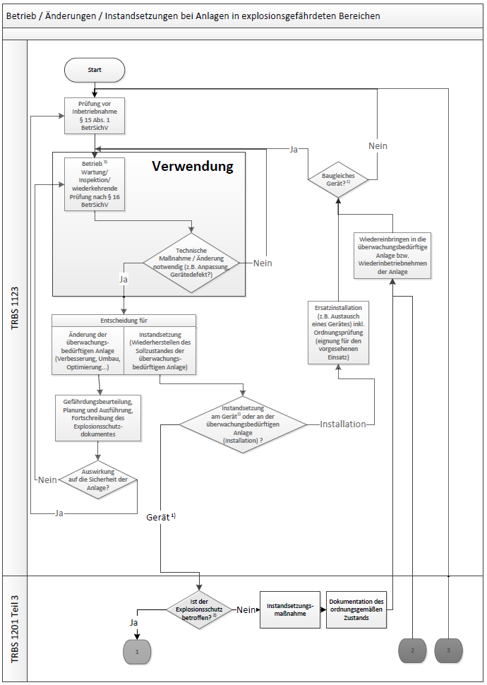
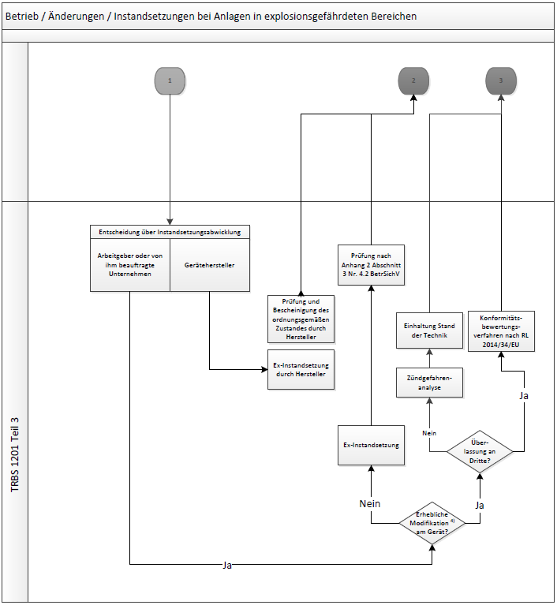

Ablaufschema Betrieb/Änderung/Instandsetzung bei Ex-Anlagen (Blatt 1)

Ablaufschema Betrieb/Änderung/Instandsetzung bei Ex-Anlagen (Blatt 2)

(Blatt 3, Erläuterungen)
Dieses Schema enthält sowohl Abläufe, die im Anwendungsbereich dieser Technischen Regel liegen als auch Abläufe, die im Geltungsbereich der TRBS 1201 Teil 3 liegen.
Fußnoten:
| 1) | Der Begriff "Gerät" umfasst Geräte, Schutzsysteme sowie Sicherheits-, Kontroll- und Regelvorrichtungen nach Richtlinie 2014/34/EU (inkl. Gerätekombinationen, Baugruppen, Verbindungseinrichtungen). |
| 2) | Ermittlung der Relevanz einer Instandsetzung für den Explosionsschutz siehe Abschnitte 3 und 4 dieser TRBS (abhängig von z. B. Komplexität der Instandsetzung, Bedeutung des von der Instandsetzung betroffenen Bauteils für den Explosionsschutz, Verfügbarkeit der notwendigen Informationen wie Herstellerunterlagen). |
| 3) | Wartungs- und Inspektionstätigkeiten sind vom Grundsatz her keine Instandsetzungstätigkeiten, können aber unter Umständen den Ausbau von Teilen notwendig machen, deren Wiedereinbau eine Prüfung vor Inbetriebnahme nach § 15 Absatz 1 BetrSichV in Verbindung mit Anhang 2 Abschnitt 3 Nummer 4.1 BetrSichV erfordert. Keinesfalls ist hier jedoch eine Prüfung nach § 15 Absatz 1 BetrSichV in Verbindung mit Anhang 2 Abschnitt 3 Nummer 4.2 BetrSichV notwendig. | 4) | Zum Begriff der "erheblichen Modifikation" siehe Leitfaden zur Richtlinie 2014/34/EU). |
Erläuterungen zum Ablaufschema:
Das vorliegende Ablaufschema stellt insbesondere die Abgrenzung der in dieser TRBS behandelten prüfpflichtigen Änderungen von Ex-Anlagen zur Instandsetzung von Geräten, Schutzsystemen, Sicherheits-, Kontroll- oder Regelvorrichtungen im Sinne der Richtlinie 2014/34/EU dar. Die in den Anwendungsbereichen dieser TRBS fallenden Vorgänge sind im Ablaufschema durch entsprechende Randmarkierungen gekennzeichnet.
Auf Blatt 1 befinden sich im Wesentlichen Vorgänge, die in Verantwortung des Arbeitgebers der überwachungsbedürftigen Anlage ausgeführt werden. Aus dem Betrieb (inkl. Wartung, Inspektion, wiederkehrende Prüfungen) heraus kann sich die Notwendigkeit einer technischen Maßnahme ergeben. Abhängig von den vorliegenden Randbedingungen wird sich der Arbeitgeber für eine Änderung seiner Anlage oder für eine Instandsetzungsmaßnahme entscheiden. Bei einer Instandsetzung ist wiederum zu unterscheiden zwischen einer Maßnahme an der Installation (z. B. Austausch eines defekten Gerätes gegen ein Ersatzgerät) oder einem Eingriff in ein Gerät, ein Schutzsystem oder eine Sicherheits-, Kontroll- und Regelvorrichtung im Sinne der Richtlinie 2014/34/EU. Wenn im letztgenannten Fall darüber hinaus festgestellt wird, dass die erforderliche Instandsetzungsmaßnahme relevant für den Explosionsschutz ist (siehe Abschnitte 3 und 4 dieser TRBS), greift § 15 BetrSichV in Verbindung mit Anhang 2 Abschnitt 3 Nummer 4.2 BetrSichV, und im Ablaufschema erfolgt am Übergabepunkt "1" der Übergang auf Blatt 2.
Neben dem Pfad der "Ex-Instandsetzung" mit Prüfung nach § 15 Absatz 1 BetrSichV in Verbindung mit Anhang 2 Abschnitt 3 Nummer 4.2 BetrSichV werden auf dem Blatt 2 des Ablaufschemas Vorgänge beschrieben, die im Instandsetzungsunternehmen häufig auftreten können. Dazu gehört z. B. das Überlassen an Dritte, das insbesondere bei externen Werkstätten (defektes Gerät wird angenommen, ein gleichartiges bereits repariertes Gerät wird an den Auftraggeber ausgeliefert) regelmäßig vorkommt.
Nach der Instandsetzung (Übergabepunkt "2" im Ablaufschema) wird das betreffende Gerät, Schutzsystem oder die Sicherheits-, Kontroll- und Regelvorrichtung im Sinne der Richtlinie 2014/34/EU wieder in der Ex-Anlage installiert. Hier kann es notwendig sein, eine Prüfung vor Inbetriebnahme nach § 15 Absatz 1 BetrSichV in Verbindung mit Anhang 2 Abschnitt 3 Nummer 4.1 BetrSichV vorzunehmen, z. B. durch eine zur Prüfung befähigte Person des Arbeitgebers nach Anhang 2 Abschnitt 3 Nummer 3.1 BetrSichV.